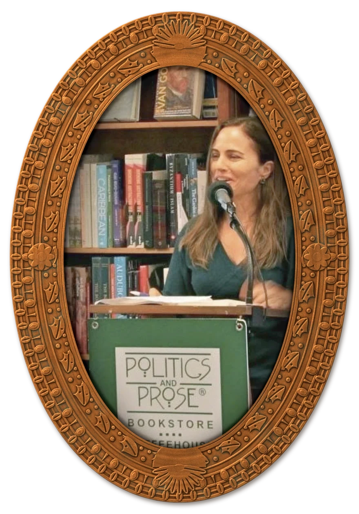

Past speaking events
- 2018“Women in Politics”
Youth Leadership Summit, Broward County, Florida - 2017“Designing a Global Issue Engagement Strategy”
Global Issues Network, George Washington University, Washington, DC - 2016“From Godzilla to Thumbelina? Our Global Footprint at 2100”
Our Task Annual Conference, Washington, DC - 2014“Green Lights: Getting and Giving”
Green Festival, San Francisco and Washington, DC - 2013Author reading
Politics and Prose, Washington, DC - 2011“Climate Change and Disaster Risk Reduction in the Sahel…”
UN Global Platform for Disaster Risk Reduction, Geneva
